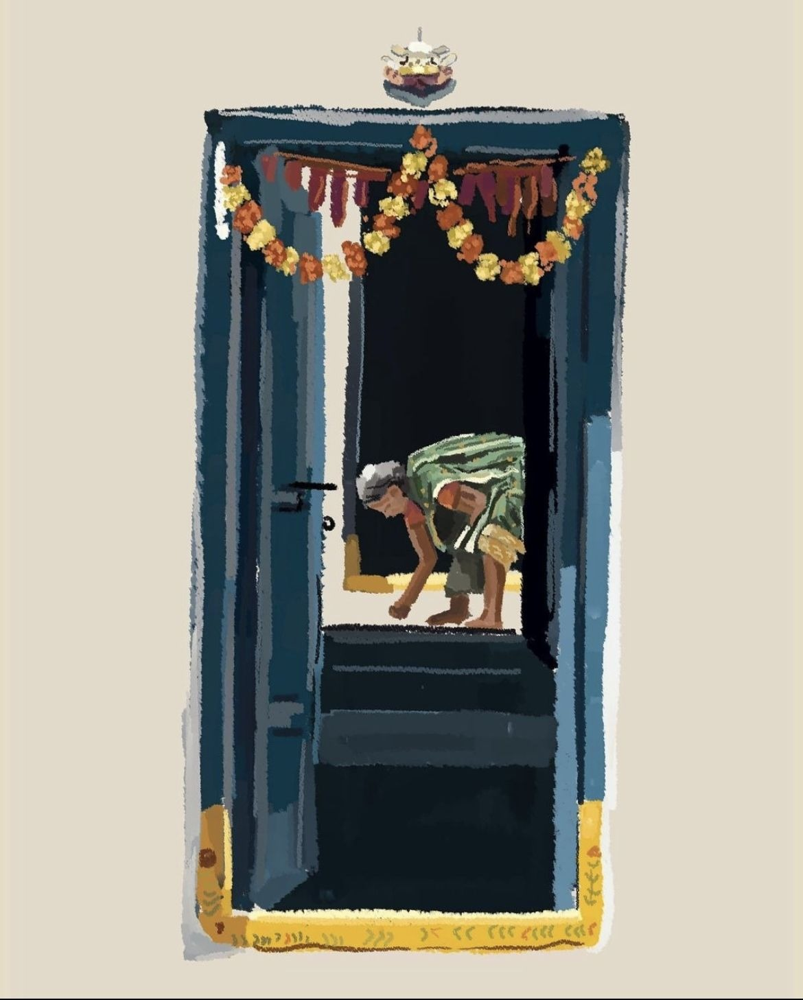
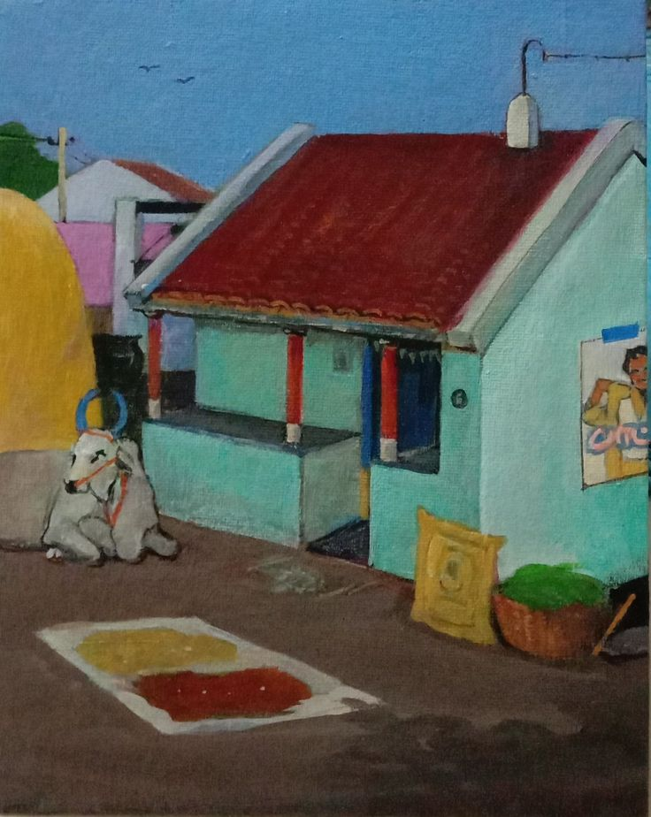

Civic layer for Pune wards
Ward intelligence, layered like a city desk.
A shared civic layer where signals become action. KindredPune blends ward data, field voices, volunteer movement, and NGO response into a calm system that helps the city notice sooner and coordinate better.
Real-time ward cues
Volunteer matching in flow
NGO and CSR coordination
Today’s ward pulse
63 fresh needs
Fastest response lane
2h 14m cycle
Volunteer readiness
78% matched

Data snapshot
Quietly tracking what the city needs next
Not a dashboard wall. A compact pulse strip that lets the room understand where civic pressure is building before action teams split up across the city.
Signals stitched from helplines, field visits, and ward desks.
High-priority zones with visible stress across water and sanitation.
New calls and community submissions entering the response lane.
Live Pune map
The city, with urgency layered into view
Markers, heat pockets, and field context sit in one shared map so coordination feels less like searching and more like seeing.
Signal filters
Critical
Urgent
Stable
Intelligence layer
From scattered signals to structured action
These panels turn field noise into pattern recognition: what is getting worse, which ward needs drilldown, and how time changes the shape of response.
Severity overlays
Coral blooms surface pressure faster than spreadsheets, making heat pockets visible before they widen.
- Water stressNorth-west wards
- Waste densityPimpri fringe
- Field confidenceStrong NGO coverage
Ward drilldowns
Each ward compresses into one clear page of incidents, owners, volunteer capacity, and unresolved loops.
- Shivajinagar6 active needs
- Kasba2 follow-ups due
- Kothrud12 volunteers missing
Time-aware trends
Response timing is not a footnote. It shows which signals spike in mornings, stall by noon, or calm when supply routes open.
- 6-9 AMWater calls peak
- MiddayVolunteer drop-off
- EveningSanitation backlog rises
Who it serves
Built for the people who keep civic work moving
Different roles need different layers of clarity. The system stays human by shaping the same city view for action, funding, and field response.

NGO Worker
Walks into the day with one clear routing layer: what is urgent, what is assigned, and which households still need a call-back.

CSR Manager
Sees contribution turn into visible ward movement, with grounded reporting that feels like real impact instead of abstraction.

Volunteer
Gets matched to nearby needs that fit skill, distance, and time, so help lands where it can actually make a difference.
Voices from the field
What coordination feels like when it finally clicks
Field notes are treated like evidence, not decoration. The page keeps the human voice close to the data so decisions stay grounded.
“We stopped chasing scattered messages.”
The Shivajinagar desk now sees tanker requests, household follow-ups, and volunteer availability in one morning view.
Meera · Ward coordinator
“The map made our blind spots visible.”
Sanitation overflow reports finally lined up with where our outreach teams were thinnest.
Aslam · NGO operations lead
“I could join where I was actually needed.”
Volunteer matching felt less random. I got a nearby shift that fit my evening window and kitchen training.
Shravani · Community volunteer

Impact
Evidence of care, visible at city scale
Numbers matter more when they feel attached to streets, kitchens, taps, and people. This section carries that balance forward.
Signals logged across ward desks, volunteer lines, and NGO partners.
Requests closed through coordinated routing and field follow-through.
Community responders matched with time, distance, and skill in mind.
Local organizations contributing shared insight and action capacity.
Final call
Join the network
Be the hand that pulls someone in.
Join the network that turns local signals into coordinated care across Pune, one ward at a time.